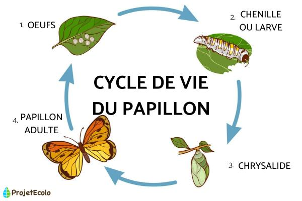
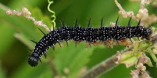

Créé par : Shahnaz Boumallouga 2SI G1
Pour : Projet de Développement Web HTML
Les papillons sont des insectes magnifiques connus pour leurs ailes colorées et leur vol gracieux. Ils subissent une transformation remarquable pendant leur cycle de vie.
Apprenez-en plus sur les papillons : Futura Sciences - Papillons


| Espèce de Papillon | Envergure | Note de Beauté | Rareté |
|---|---|---|---|
| Monarque | 9-10 cm | ★★★★★ | Commun |
| Morpho Bleu | 12-20 cm | ★★★★★ | Rare |
| Machaon | 8-12 cm | ★★★★☆ | Commun |
| Belle-Dame | 5-7 cm | ★★★☆☆ | Très Commun |
| Papillon Vitreux | 5-7 cm | ★★★★☆ | Rare |
Les papillons ont des ailes délicates couvertes de petites écailles qui créent leurs magnifiques motifs. Leur processus de métamorphose est l'une des transformations les plus étonnantes de la nature.
Les papillons représentent la transformation et les nouveaux départs. Les observer voleter de fleur en fleur apporte une sensation de paix et d'émerveillement dans n'importe quel jardin.